10.3 오프-정책 SARSA: 중요도 샘플링 기반 제어
탐험 전용 정책(행동 정책)과 최적화 대상 정책(대상 정책)을 분리하여 학습하는 오프-정책(Off-policy) SARSA 알고리즘을 공부합니다.
그림 10-3-1 오프-정책 시간차 제어(Off-Policy TD Control)의 핵심 구조와 중요도 샘플링 기반 SARSA 알고리즘 전체 조감도
온-정책의 안전제일주의 한계를 극복하기 위해, 실제로 탐험을 수행하는 ‘행동 정책’과 최적의 길을 추구하는 ‘대상 정책’을 분리하여 학습하는 오프-정책의 설계 철학을 명쾌하게 파헤쳐 봅시다!
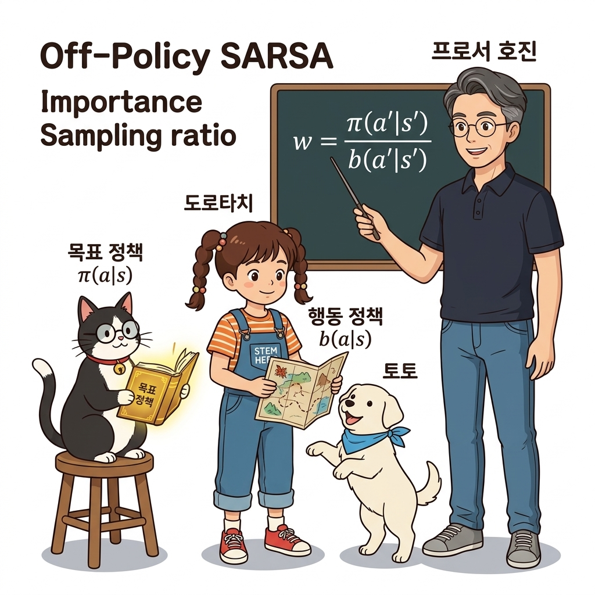
그림 10-3-2 탐험 지도(행동 정책 b)와 학습 목표 책(대상 정책 π)의 확률 비율 ρ를 대수적으로 유도해 칠판에 정리해 주는 지니와 도로시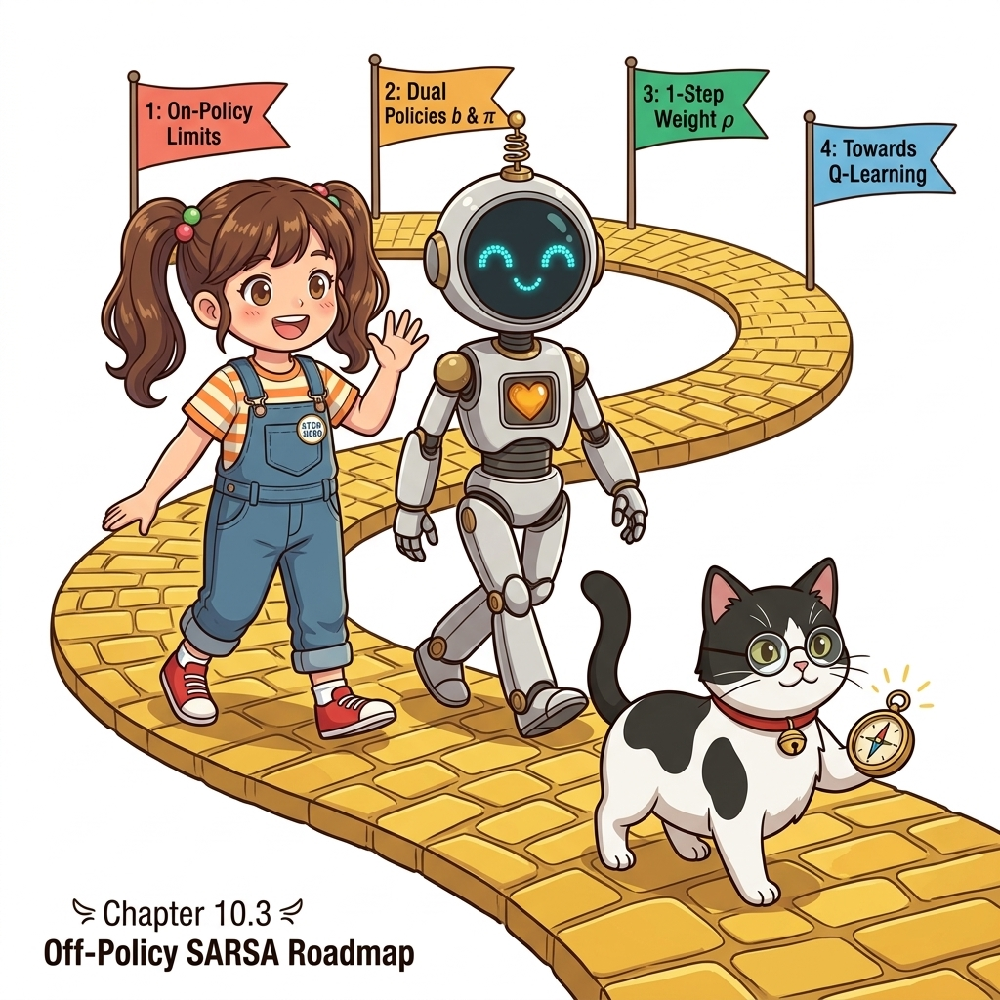
그림 10-3-3 10.3절 오프-정책 SARSA의 핵심 이론과 한계를 정복해 나가는 4대 마일스톤 학습 로드맵- 학습 목표:
- 온-정책 SARSA의 소극적 안전제일주의 한계를 극복하기 위해 행동 정책(b)과 대상 정책(π)을 분리해야 하는 필연성 이해
- 행동 정책과 대상 정책의 확률 분포 불일치(Distribution Mismatch)를 보정하는 1-스텝 중요도 샘플링 가중치 ρ(로) 유도
- MC법의 누적 곱(분산 폭발) 대비 TD법의 단 1-스텝 가중치 곱이 갖는 압도적 분산 안정화 효과 분석
- 100% 완전 탐욕 대상 정책(
self.pi)과 ε-탐욕 행동 정책(self.b)을 동시에 운용하는SarsaOffPolicyAgent파이썬 구현 - 비탐욕적 탐색 시 ρ = 0 이 되어 소중한 즉각 보상마저 증발해 버리는 오프-정책 SARSA의 치명적 결함 규명
- 중요도 비율 ρ 없이도 완벽한 오프-정책 제어를 달성하는 차세대 알고리즘인 10.4 Q-러닝(Q-Learning)으로의 필연적 도약 과정 파악
10.3.1 오프-정책 시간차 제어의 수학적 원리
10.2절에서 배운 온-정책(On-policy) SARSA에서는 하나의 정책으로 행동 선택과 가치 학습을 동시에 처리했습니다.
그림 10-3-4 하나의 나침반 바늘에 ‘탐험(Exploration)’과 ‘최적화(Optimal)’라는 상반된 두 목표가 동시에 걸려 있어 진퇴양난에 빠진 틴맨 로봇과 지니
이로 인해 최적의 길을 찾아가는 과정에서도 강제로 $\varepsilon$(10%)의 무작위 탐색을 감수해야 했고, 그 결과 에이전트는 폭탄을 지나치게 두려워하며 벽 쪽으로 멀리 돌아가는 소극적인 안전 정책을 학습했습니다.
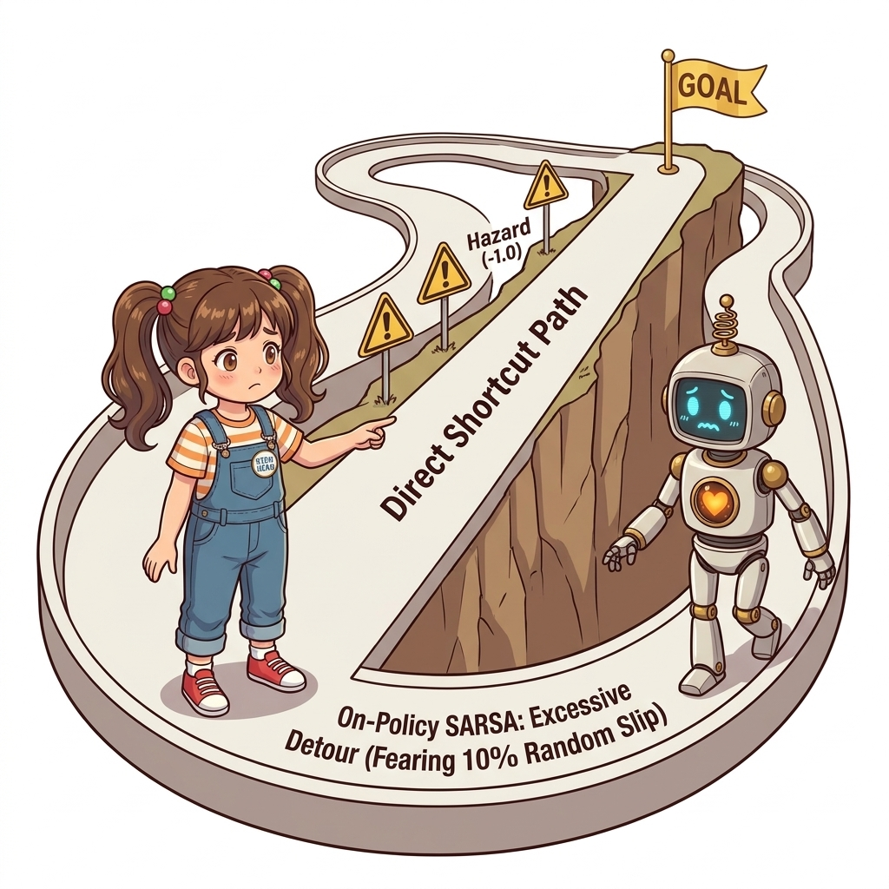
그림 10-3-5 온-정책 SARSA의 한계: 자신의 10% 실수를 두려워해 위험 구역 밖으로 하염없이 우회하는 틴맨 로봇과, 똑바로만 걷는다면 훨씬 안전하고 빠른 최단 지름길을 가리키는 도로시이 타협을 깨고 “환경을 자유롭고 대담하게 탐험하면서도, 궁극적으로 완성할 대상 정책은 어떠한 헛발질도 없는 완벽한 100% 최적 탐욕 정책으로 학습할 수 없을까?”라는 질문에서 출발하는 것이 바로 오프-정책(Off-policy)입니다.
그림 10-3-6 “자유롭게 미지의 숲을 탐험하면서도 완벽한 100% 최적 황금 지도를 완성할 수 있을까?” 새로운 오프-정책 탐험 지도를 펼쳐 든 도로시와 틴맨
오프-정책에서는 하나의 에이전트 안에 완벽히 분리된 두 개의 나침반(정책)을 운용합니다:
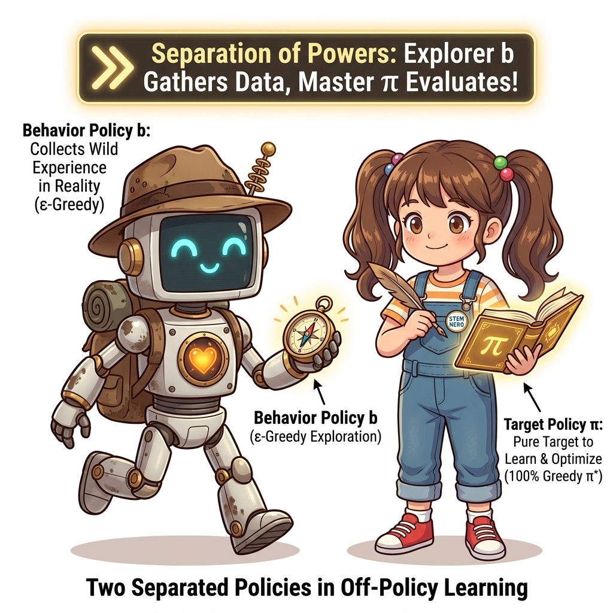
그림 10-3-7 오프-정책의 두 나침반 역할 분담: 진흙탕 속을 거침없이 누비며 경험을 모으는 거친 탐험가 틴맨(행동 정책 b)과, 수집된 데이터를 바탕으로 완벽한 황금 최적 지도를 그려나가는 학자 도로시(대상 정책 π)두 정책의 명확한 역할 분담
- 행동 정책(Behavior Policy, $b$):
- 실제로 환경과 몸으로 부딪치며 다양한 경험 데이터를 수집하는 탐험 전용 정책입니다.
- 새로운 경로를 적극적으로 개척하기 위해 $\varepsilon$-탐욕 정책($\varepsilon = 0.1$)을 사용하여 미지의 영역을 대담하게 탐색합니다.
그림 10-3-8 거친 필드에서 $\varepsilon$-탐욕 정책 나침반을 들고 온갖 경험 데이터 $(S, A, R)$을 활발히 수집하는 필드 스카우트 틴맨
- 대상 정책(Target Policy, $\pi$):
- 우리가 궁극적으로 완성하고자 하는 이상적인 최종 최적 정책입니다.
- 어떠한 실수나 헛발질도 용납하지 않는 100% 순수 탐욕적(Greedy, $\varepsilon = 0$) 최적 가치만을 추구합니다.
그림 10-3-9 돋보기와 정밀 자를 들고 오직 100% 순수 탐욕 최적 경로만을 정교하게 설계하는 지혜로운 학자 도로시
1) 백업 다이어그램과 샘플링 정책의 차이
기존 온-정책 SARSA의 갱신식을 다시 상기해 봅시다:
$Q_{\pi}(S_t, A_t) \leftarrow Q_{\pi}(S_t, A_t) + \alpha \cdot [R_t + \gamma Q_{\pi}(S_{t+1}, A_{t+1}) - Q_{\pi}(S_t, A_t)]$ (식 10.13: 온-정책 SARSA 갱신식)
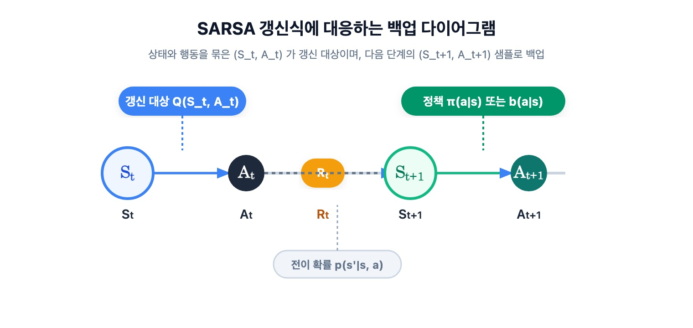
그림 10-3-10 SARSA의 백업 다이어그램. 현재 상태-행동 쌍 $(S_t, A_t)$에서 보상 $R_t$와 다음 상태 $S_{t+1}$을 얻은 뒤, 다음 행동 $A_{t+1}$을 정책으로부터 샘플링하는 구조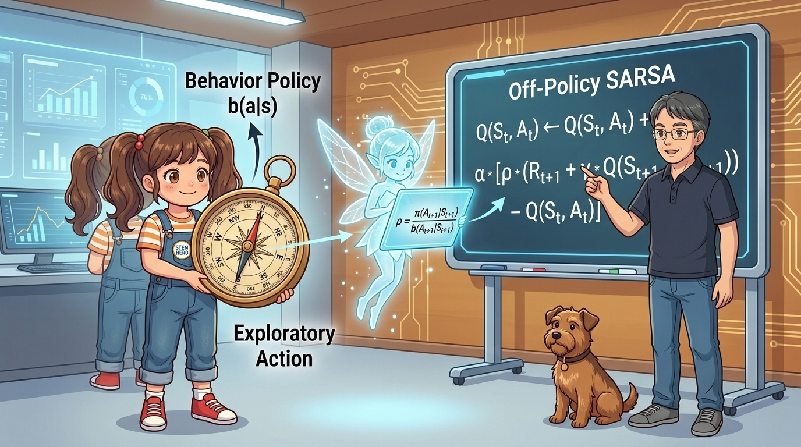
그림 10-3-11 도로시가 행동 정책 $b(a|s)$의 나침반을 들고 모험을 떠나는 동안, 지니가 1-스텝 중요도 가중치 $\rho$를 계산하여 이호진 교수님의 목표 정책 $\pi$ 갱신식에 보정해 주는 오프-정책 SARSA 협업 메커니즘[그림 10-3-10]과 [그림 10-3-11]에서 주목할 핵심 지점은 다음 상태 $S_{t+1}$에서 선택되는 다음 행동 $A_{t+1}$입니다:
- 대상 정책 관점 ($A_{t+1} \sim \pi$): 만약 $A_{t+1}$이 대상 정책 $\pi$로부터 선택된다면, TD 목표치 $[R_t + \gamma Q_{\pi}(S_{t+1}, A_{t+1})]$은 정책 $\pi$를 따를 때의 참된 기댓값을 편향 없이 대변합니다.
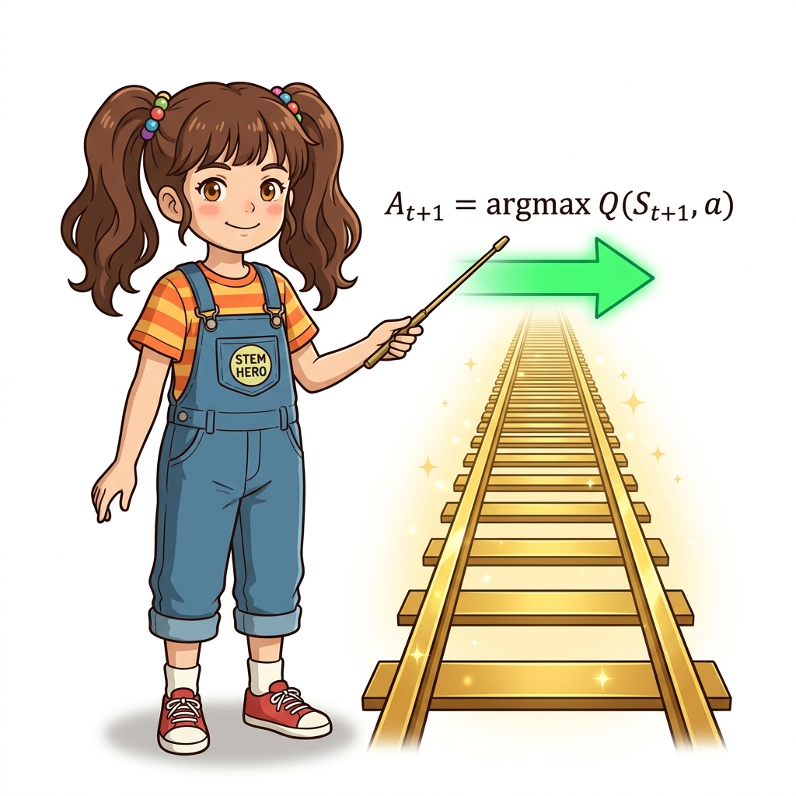
그림 10-3-12 대상 정책 $\pi$ 관점에서의 이상적인 선택: 한 치의 오차도 없는 황금 레일 위를 달리는 최적 행동 $A_{t+1}$- 행동 정책 관점 ($A_{t+1} \sim b$): 하지만 오프-정책에서는 에이전트가 현실 환경에서 실제로 움직이는 정책이 행동 정책 $b$이므로, 실제로 관측되는 다음 행동은 반드시 $A_{t+1} \sim b$로부터 샘플링됩니다!
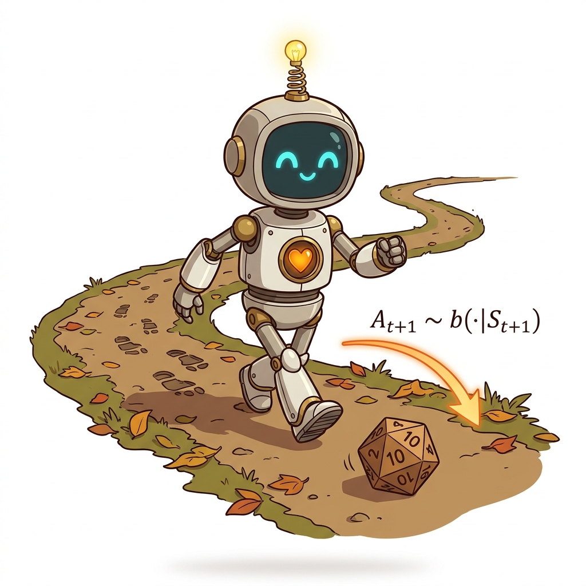
그림 10-3-13 현실 필드에서 바람과 10% 탐색 주사위에 의해 실제로 발을 디딘 행동 정책 $b$의 발자국서로 다른 확률 분포($b$)에서 뽑아낸 행동을 가지고 우리가 원하는 목표 분포($\pi$)의 가치를 그대로 갱신해 버리면 심각한 수학적 왜곡(편향)이 발생합니다.
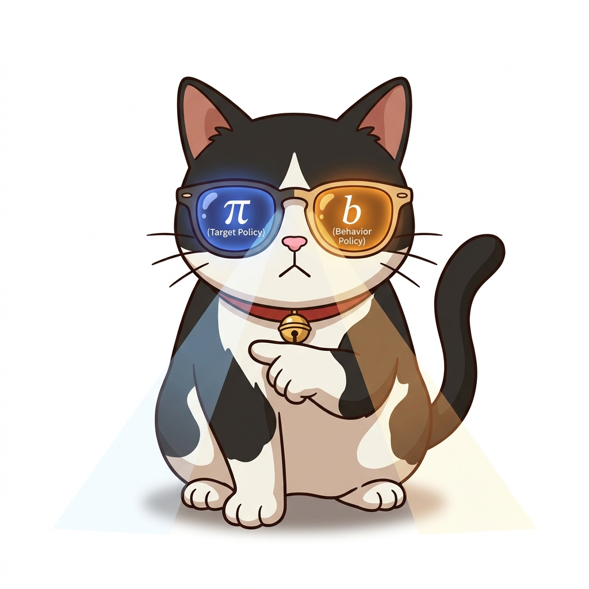
그림 10-3-14 서로 다른 두 렌즈: 대상 정책(파란 렌즈)과 행동 정책(주황 렌즈)의 굴절률 차이로 인해 발생하는 가치 추정의 수학적 왜곡을 경고하는 지니 조교이 확률 분포의 차이(Distribution Mismatch)를 수학적으로 완벽히 보정해 주는 다리가 바로 중요도 샘플링(Importance Sampling)입니다.
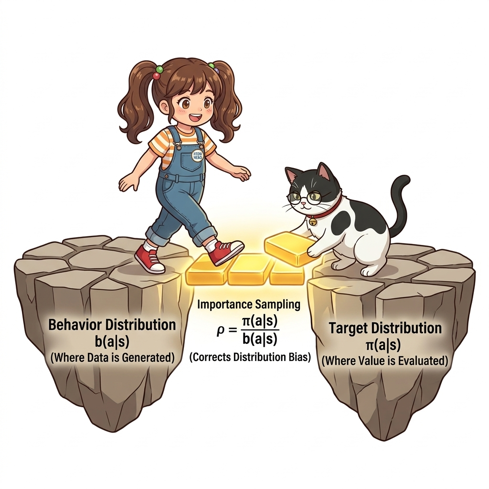
그림 10-3-15 행동 분포 b의 섬에서 목표 분포 π의 섬으로 건너가기 위해, 지니 조교가 두 세계의 확률 비율을 계산한 중요도 비율 징검다리 돌판(ρ = π/b)을 놓아주는 비유2) 1-스텝 중요도 샘플링 가중치 $\rho$
9.5절에서 배운 중요도 샘플링의 원리를 1-스텝 시간차 학습에 적용하여 가중치 $\rho$(로)를 정의합니다:
$\rho = \frac{\pi(A_{t+1} \mid S_{t+1})}{b(A_{t+1} \mid S_{t+1})}$ (식 10.14: 1-스텝 중요도 가중치)
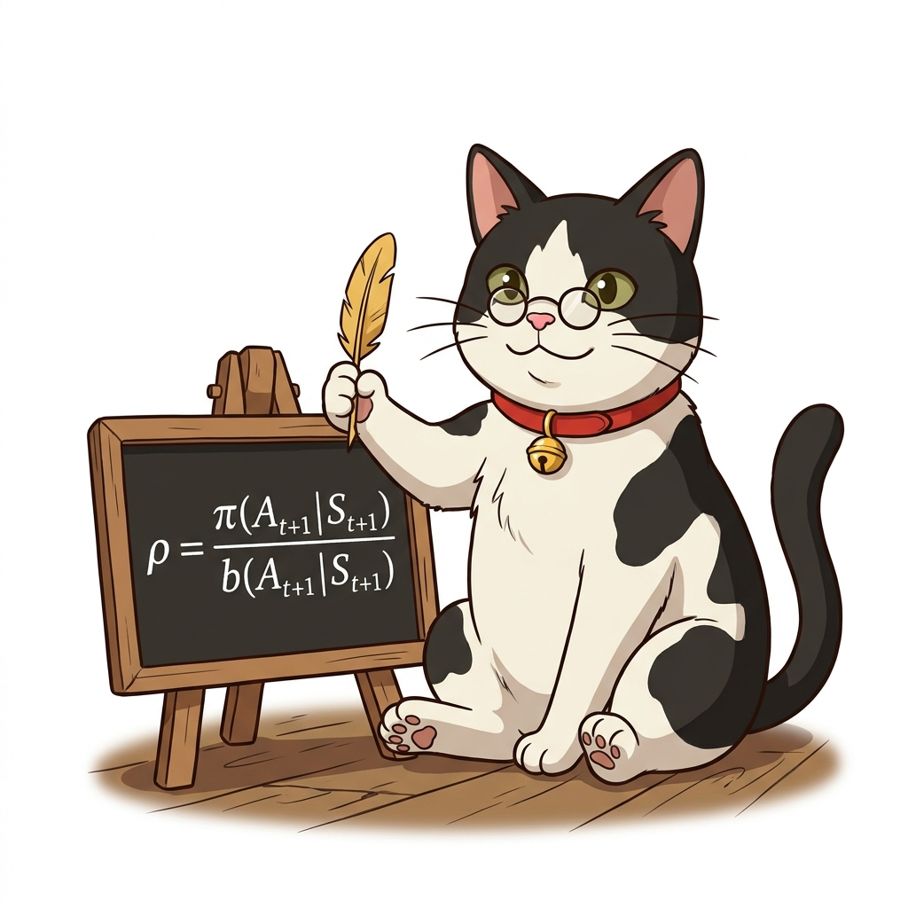
그림 10-3-16 두 정책의 확률 비율 $\rho = \pi / b$ 수식 펜던트를 걸고 중요도 가중치의 수학적 정의를 해설하는 조교 지니이 가중치 $\rho$는 “행동 정책 $b$가 다음 행동 $A_{t+1}$을 선택할 확률 대비, 우리가 목표로 하는 대상 정책 $\pi$가 그 행동을 선택했을 확률의 비율”을 의미합니다.
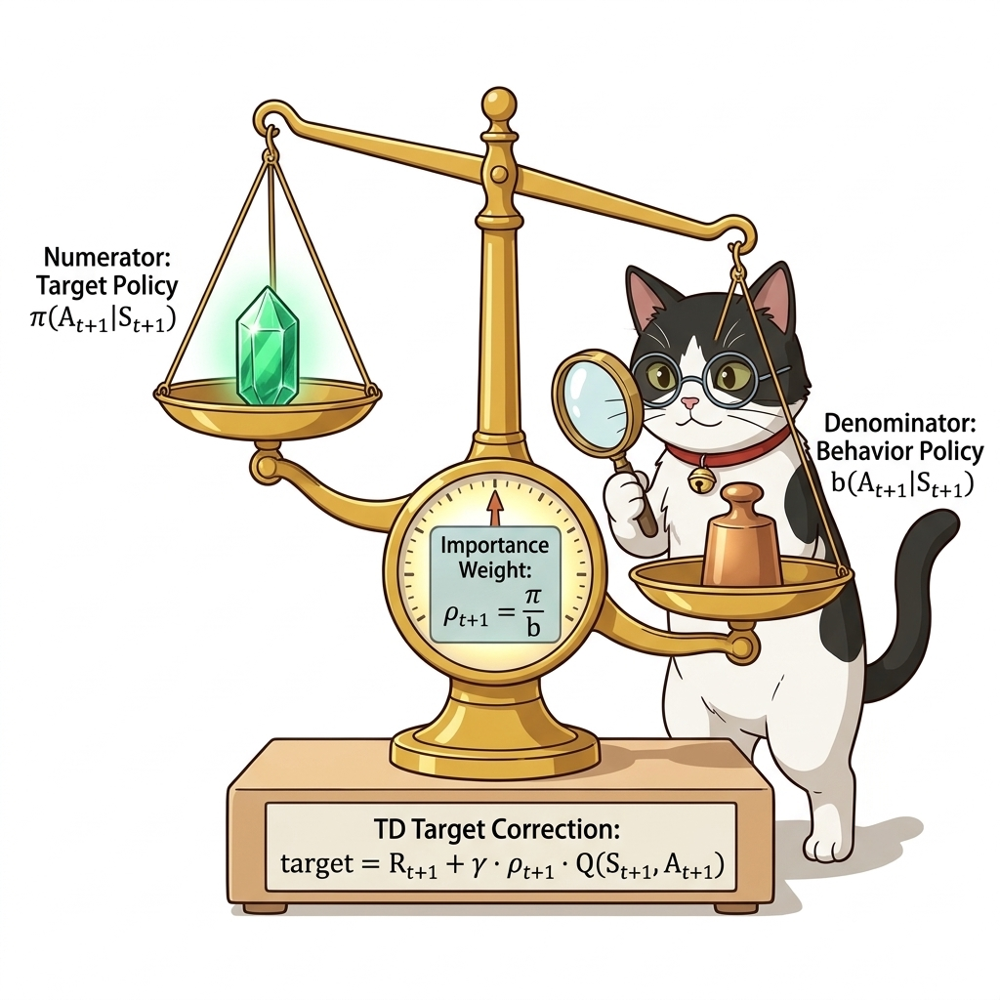
그림 10-3-17 대상 정책의 확률 π와 행동 정책의 확률 b의 비율을 정밀하게 측정하여 TD 목표의 왜곡을 1-스텝 만에 바로잡는 황금 저울 비유이 가중치 $\rho$를 TD 목표에 곱해주면 다음과 같은 오프-정책 SARSA 갱신 점화식이 마침내 도출됩니다:
$Q_{\pi}(S_t, A_t) \leftarrow Q_{\pi}(S_t, A_t) + \alpha \cdot \left[ \rho \cdot (R_t + \gamma Q_{\pi}(S_{t+1}, A_{t+1})) - Q_{\pi}(S_t, A_t) \right]$ (식 10.15: 오프-정책 SARSA 갱신식)
그림 10-3-18 이호진 교수님이 대형 녹색 칠판에서 황금빛 분필로 식 (10.15) 오프-정책 SARSA 점화식을 명쾌하게 증명·풀이하시는 열정적인 직강 모습
행동 정책 $b$가 수집한 한 걸음의 결과($R_t, S_{t+1}, A_{t+1}$)에 비율 $\rho$를 곱해줌으로써, 대상 정책 $\pi$가 실제로 겪었을 때의 참된 기댓값으로 정확하게 환산하여 가치를 갱신합니다.
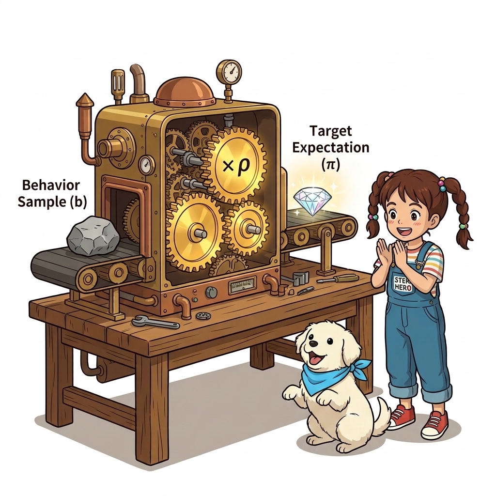
그림 10-3-19 행동 정책이 모아온 거친 샘플 원석을 $\rho$ 배율 기어로 연마하여 대상 정책의 참된 기댓값 보석으로 변환하는 정밀 기계 장치3) MC 중요도 샘플링 vs TD 중요도 샘플링의 결정적 차이
여기서 시간차(TD) 학습의 위대한 강점이 다시 한번 극명하게 드러납니다:
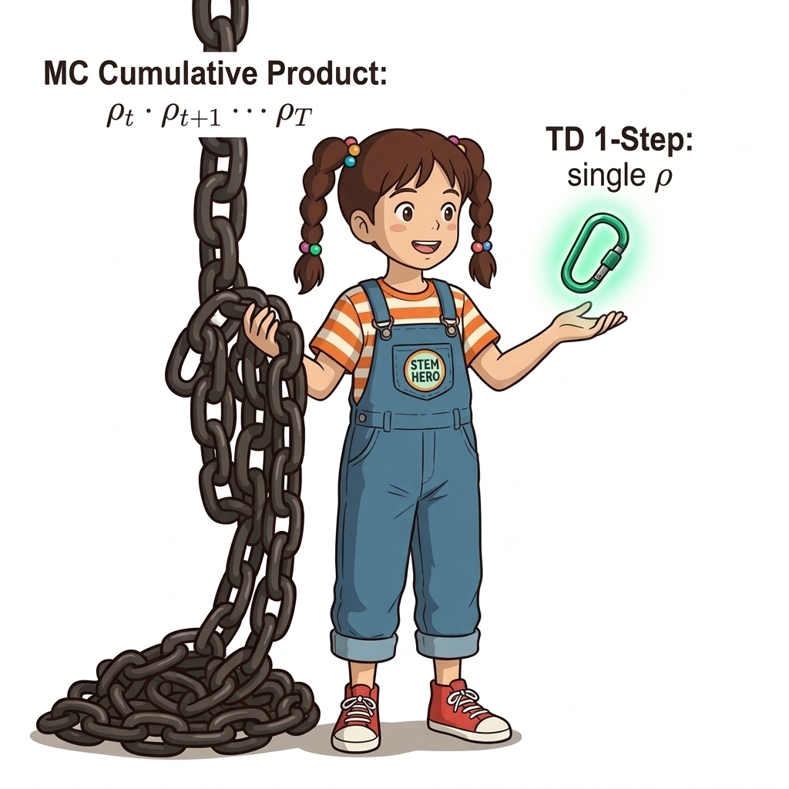
그림 10-3-20 수백 개가 얽힌 무거운 쇠사슬(MC의 누적 곱)과 가볍고 단단한 단 1개의 카라비너 링(TD의 1-스텝 $\rho$)을 비교하며 분산 안정성의 차이를 짚는 도로시와 지니- 몬테카를로(MC)법의 중요도 가중치:
에피소드가 끝날 때까지 발생한 수십~수백 번의 모든 행동에 대한 비율을 모조리 곱한 누적 곱이었습니다:
$\rho_{t:T} = \rho_t \cdot \rho_{t+1} \cdot \rho_{t+2} \cdots \rho_{T-1}$
작은 오차와 확률 비율들이 수백 번 곱해지면서 가중치가 0으로 소멸하거나 수천만으로 치솟는 극심한 분산 폭발(Variance Explosion)이 발생하여 실전 사용이 불가능에 가까웠습니다.
 그림 10-3-21 곱해질수록 걷잡을 수 없이 부풀어 오르다 마침내 펑 터져버리는 MC 누적 곱의 분산 폭발과 당황한 틴맨 로봇
그림 10-3-21 곱해질수록 걷잡을 수 없이 부풀어 오르다 마침내 펑 터져버리는 MC 누적 곱의 분산 폭발과 당황한 틴맨 로봇
- 시간차(TD)법의 중요도 가중치: 단 1걸음 이동한 뒤 곧바로 다음 가치를 빌려와 부트스트랩하므로, 오직 1단계의 확률 비율 $\rho = \pi(A_{t+1} \mid S_{t+1}) / b(A_{t+1} \mid S_{t+1})$ 단 하나만 곱해집니다! 따라서 MC법에 비해 분산이 상상할 수 없을 만큼 극적으로 안정화됩니다.
 그림 10-3-22 단 1개의 에메랄드 고리만을 곱해 잔잔한 호수처럼 안정적으로 유지되는 TD 1-스텝 가치 저수조와 평온한 도로시와 토토
그림 10-3-22 단 1개의 에메랄드 고리만을 곱해 잔잔한 호수처럼 안정적으로 유지되는 TD 1-스텝 가치 저수조와 평온한 도로시와 토토
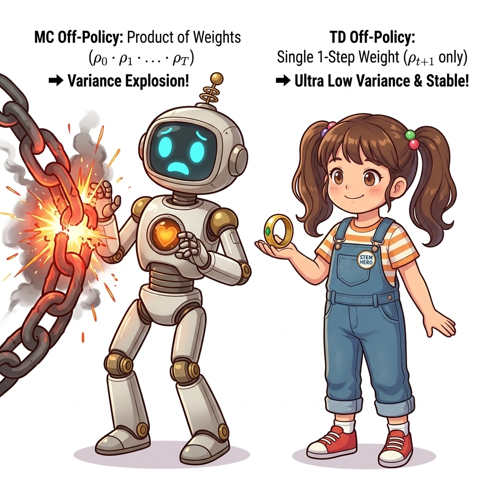
그림 10-3-23 수백 개의 쇠사슬 고리가 얽혀 시뻘겋게 과열 폭발하는 MC의 누적 곱(왼쪽) vs 가볍고 단단한 단 1개의 에메랄드 고리로 분산을 차분히 안정화시키는 TD의 1-스텝 가중치(오른쪽)의 시각적 대조10.3.2 오프-정책 SARSA 에이전트 구현
이제 파이썬으로 오프-정책 SARSA 에이전트 클래스를 구현해 봅시다.
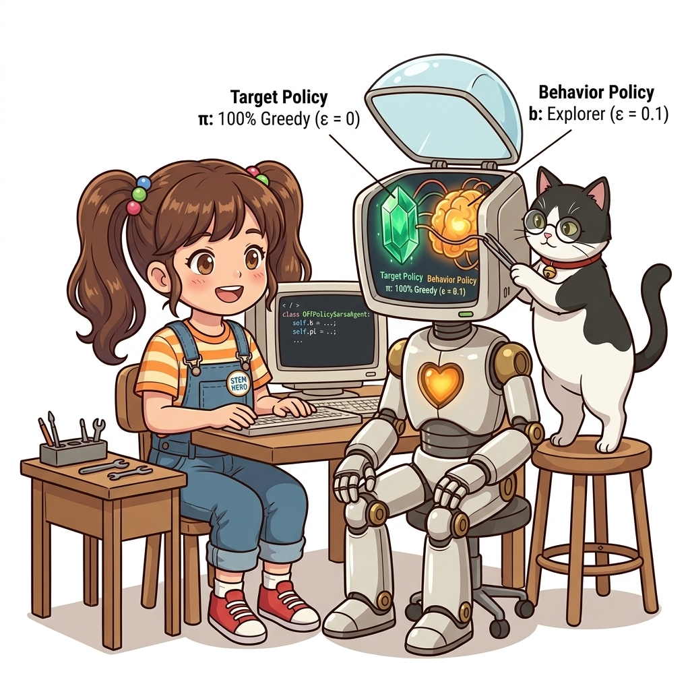
그림 10-3-24 틴맨 로봇의 머릿속에 공존하는 두 개의 코어: 최적 가치를 보존하는self.pi(사파이어 블루, 100% 탐욕)와 필드를 자유롭게 뛰어다니는 self.b(앰버 골드, 탐험)의 듀얼 코어 구조
SarsaOffPolicyAgent 클래스 구조
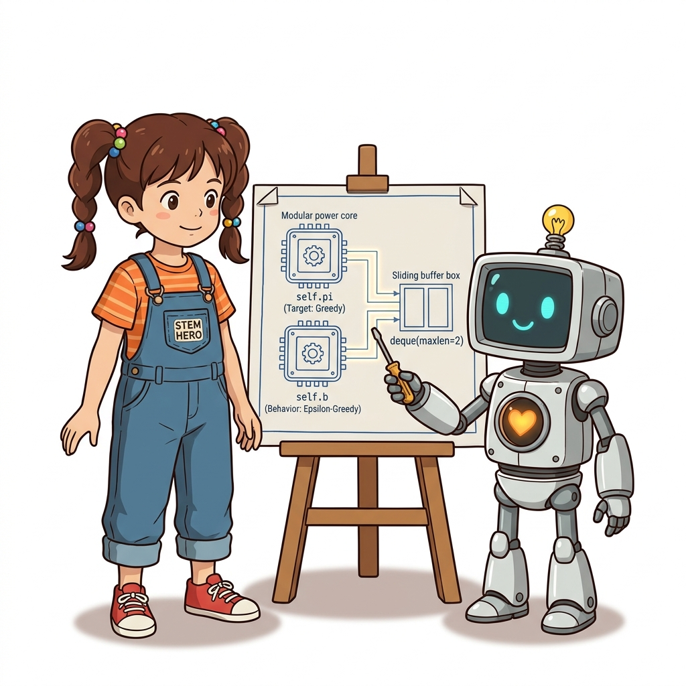
그림 10-3-25self.pi, self.b, self.Q, deque(maxlen=2) 4대 핵심 모듈이 레고 블록처럼 결합된 SarsaOffPolicyAgent 시스템 설계도
from collections import defaultdict, deque
import numpy as np
from common.utils import greedy_probs
class SarsaOffPolicyAgent:
def __init__(self):
self.gamma = 0.9 # 할인율 γ
self.alpha = 0.8 # 학습률 α
self.epsilon = 0.1 # 행동 정책의 탐색 확률 ε
self.action_size = 4 # 상, 하, 좌, 우 4가지 행동
random_actions = {0: 0.25, 1: 0.25, 2: 0.25, 3: 0.25}
self.pi = defaultdict(lambda: random_actions) # ❶ 목표 정책 π: 최적 탐욕 정책 (epsilon=0)
self.b = defaultdict(lambda: random_actions) # ❷ 행동 정책 b: 활발한 탐험 정책 (epsilon=0.1)
self.Q = defaultdict(lambda: 0)
self.memory = deque(maxlen=2)
def get_action(self, state):
# ❸ 실제 필드에서의 행동은 반드시 행동 정책 b로부터 샘플링!
action_probs = self.b[state]
actions = list(action_probs.keys())
probs = list(action_probs.values())
return np.random.choice(actions, p=probs)
def reset(self):
self.memory.clear()
이어서 에이전트의 update() 메서드를 구현합니다:
그림 10-3-26 2칸 슬라이딩 윈도우 버퍼에서 $(S_t, A_t, R_t)$와 $(S_{t+1}, A_{t+1})$가 온전히 갖추어졌는지 돋보기로 정밀 검사하는 지니 조교
def update(self, state, action, reward, done):
self.memory.append((state, action, reward, done))
if len(self.memory) < 2:
return
state, action, reward, done = self.memory[0]
next_state, next_action, _, _ = self.memory[1]
if done:
next_q = 0
rho = 1.0 # ❹ 종단 상태에서는 추가 행동이 없으므로 가중치 보정 불필요
else:
next_q = self.Q[next_state, next_action]
# ❺ 1-스텝 중요도 가중치 rho 계산: pi(A_{t+1}|S_{t+1}) / b(A_{t+1}|S_{t+1})
rho = self.pi[next_state][next_action] / self.b[next_state][next_action]
# ❻ 식 (10.15)에 따라 rho를 가중한 TD 목표로 Q 갱신
target = rho * (reward + self.gamma * next_q)
self.Q[state, action] += (target - self.Q[state, action]) * self.alpha
# ❼ 두 정책을 각각 서로 다른 기준으로 비대칭 개선!
self.pi[state] = greedy_probs(self.Q, state, epsilon=0) # π는 100% 완전 탐욕 정책
self.b[state] = greedy_probs(self.Q, state, self.epsilon) # b는 ε-탐욕 탐험 정책
코드 핵심 포인트: 비대칭 정책 개선 (Asymmetric Policy Improvement)
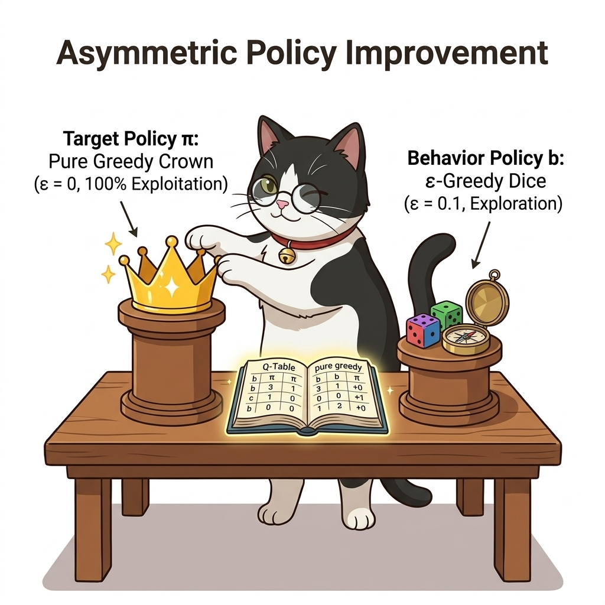
그림 10-3-27 하나의 Q테이블 저수조를 바탕으로, 대상 정책 π에는 100% 탐욕 황금 왕관(epsilon=0)을, 행동 정책 b에는 10% 탐색 주사위(epsilon=0.1)를 찍어 발행하는 비대칭 듀얼 정책 개선 메커니즘
- ❶, ❷
self.pi와self.b분리:self.pi는 오직 최적의 행동만을 선택하는 순수 탐욕 정책(epsilon=0)으로 진화하며,self.b는 미지의 길을 탐색할 수 있도록 10%의 무작위성(self.epsilon=0.1)을 계속 유지합니다.
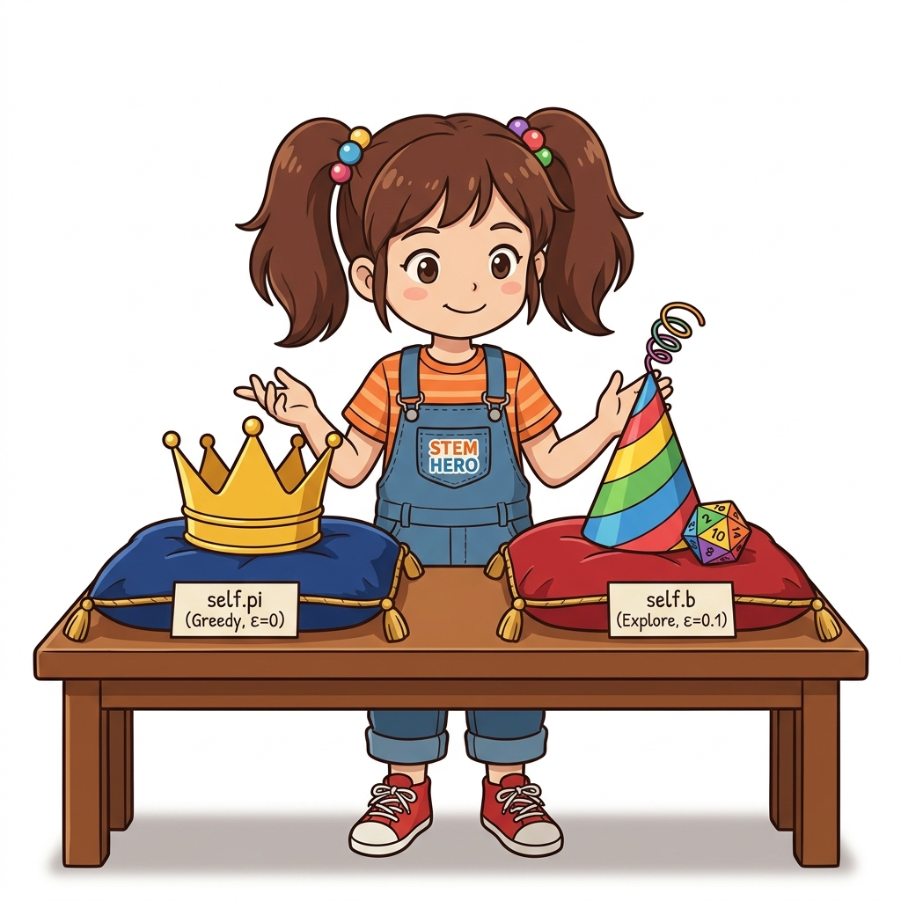
그림 10-3-28 100% 순금 탐욕 왕관(self.pi, $\varepsilon=0$)과 10% 탐색 안테나가 달린 모험 모자(self.b, $\varepsilon=0.1$)의 선명한 대비
- ❸
get_action: 에이전트가 현실 그리드 월드에서 발을 디딜 때는 오직 탐험 정책인self.b에 따라 행동합니다.
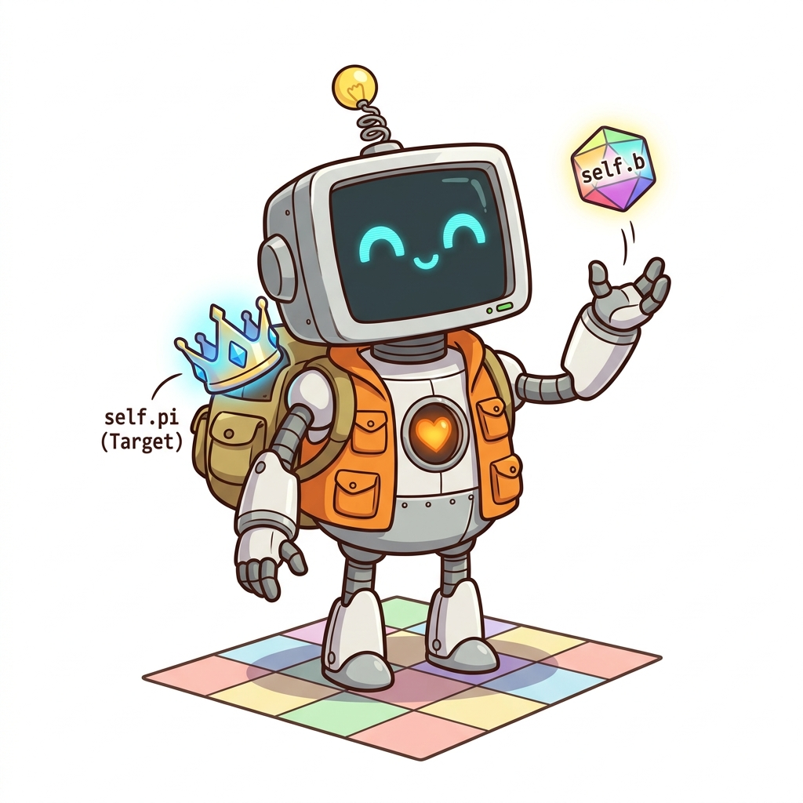
그림 10-3-29 현실 무대에서는 오직 탐험용 주황 외투(self.b)를 입고 당당하게 주사위를 굴려 걸어 나가는 틴맨 로봇
- ❹ 종단 처리
rho = 1.0: 목표에 도달하여 에피소드가 끝났다면 다음 행동이 존재하지 않으므로 부트스트랩 보정이 필요 없어 가중치를 1.0으로 고정합니다.
그림 10-3-30 골인 깃발에 닿는 순간 ‘부트스트랩 중단, 가중치 $\rho = 1.0$ 고정’ 황금 자물쇠가 딸깍 잠기며 유령 보정 계산을 방지하는 안전장치
- ❺ 1-스텝 가중치
rho: 다음 상태에서 에이전트가 실제로 취한 행동 $A_{t+1}$에 대해 두 정책의 확률 비율을 계산합니다:rho = self.pi[next_state][next_action] / self.b[next_state][next_action].
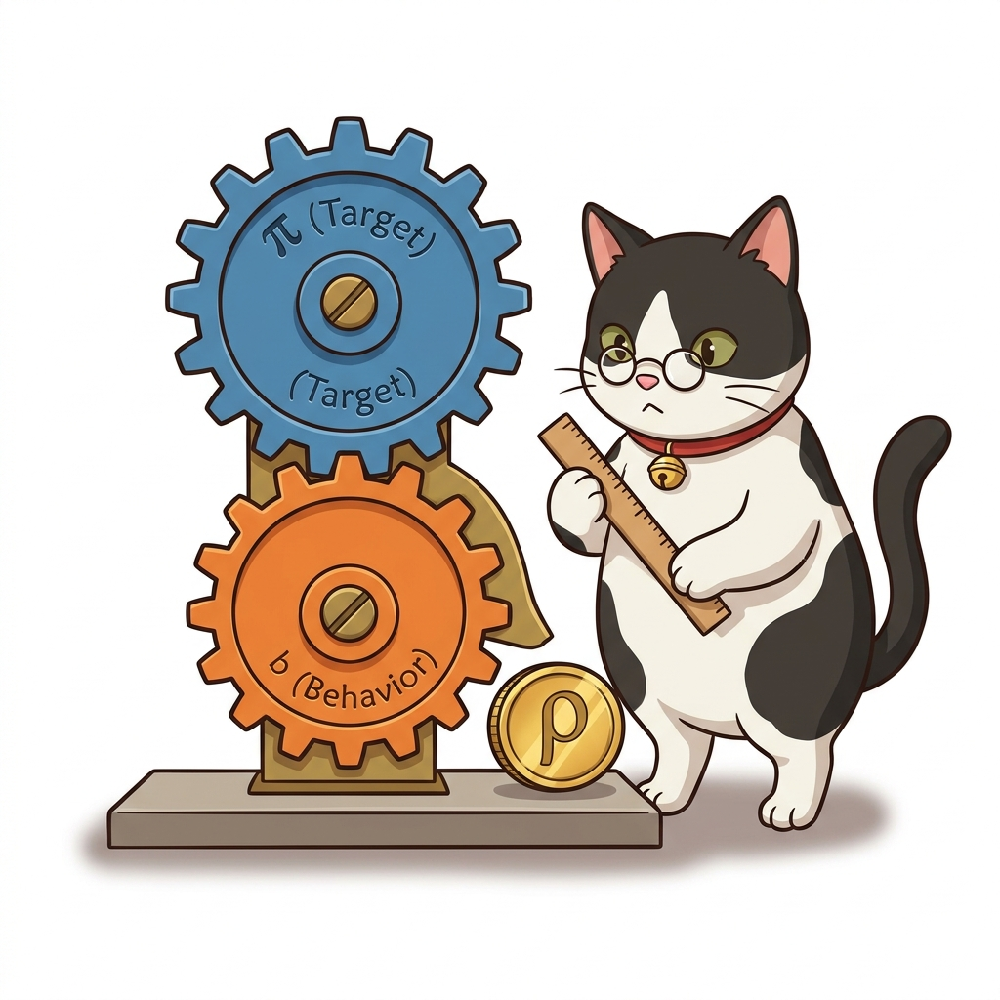
그림 10-3-31 대상 정책 $\pi$와 행동 정책 $b$의 톱니가 맞물려 정밀하게 비율 $\rho$ 코인을 찍어내는 나눗셈 기어 메커니즘- ❻
target = rho * (reward + self.gamma * next_q): 중요도 비율 $\rho$를 TD 목표에 곱하여 대상 정책 $\pi$ 관점에서의 올바른 기댓값으로 즉시 환산합니다.
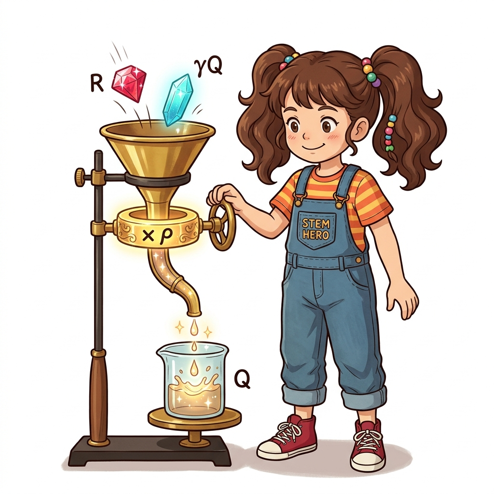
그림 10-3-32 즉각 보상 $R$과 할인된 미래 가치 $\gamma Q$가 $\rho$ 배율 링을 거쳐 메인 Q테이블 저수조로 신선하게 유입되는 모습10.3.3 오프-정책 SARSA의 치명적 약점과 Q-러닝으로의 도약
오프-정책 SARSA 에이전트를 3×4 그리드 월드에서 1만 번 훈련시킨 후 얻은 결과를 확인해 봅시다.
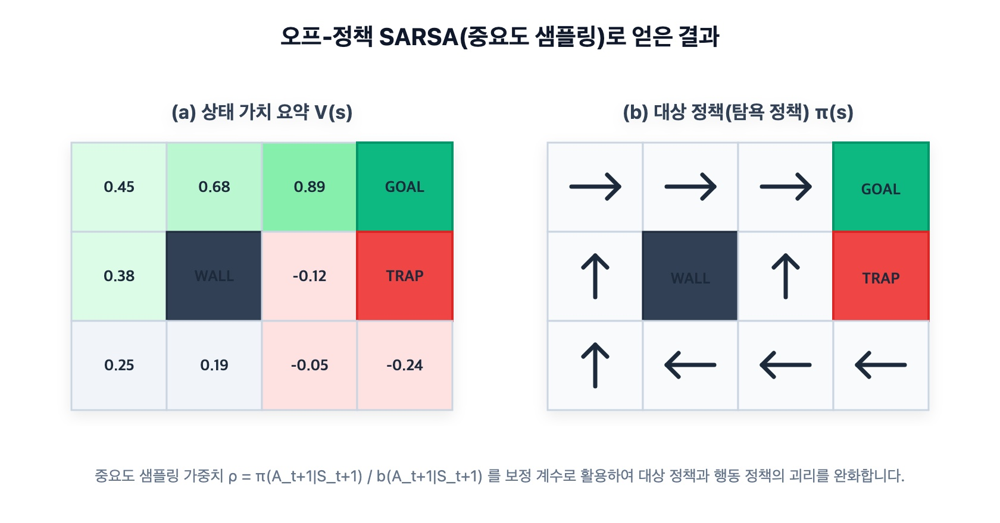
그림 10-3-33 오프-정책 SARSA로 얻은 그리드 월드 제어 결과. 온-정책 SARSA에 비해 화살표 방향이 다소 불안정하고 수렴 속도가 느린 양상을 보입니다.왜 오프-정책 SARSA는 이론처럼 깔끔하게 수렴하지 못할까요?
[그림 10-3-33]을 보면 온-정책 SARSA에 비해 학습 결과가 다소 불안정하게 흔들립니다. 그 원인은 바로 식 (10.15)의 중요도 가중치 $\rho$가 가진 치명적인 두 가지 수학적 한계 때문입니다:
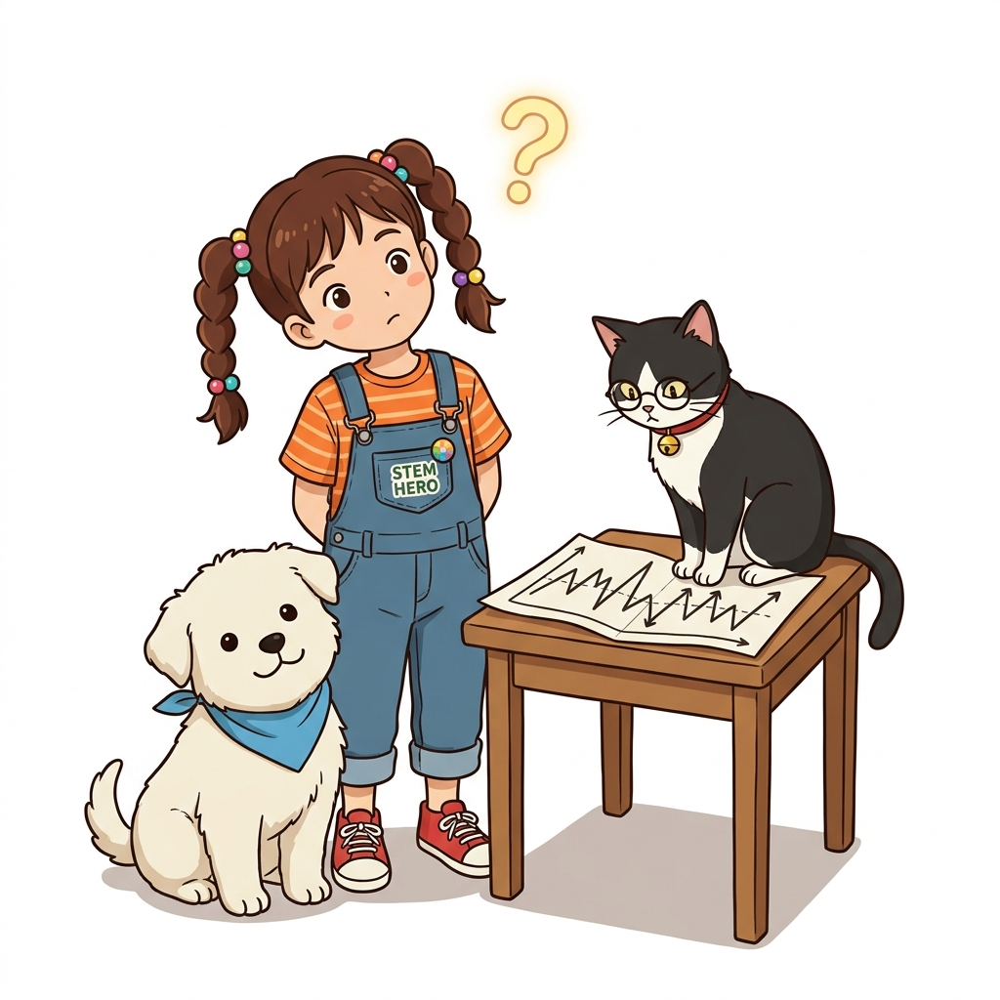
그림 10-3-34 “이론적으로는 완벽해 보이는데, 왜 오프-정책 SARSA는 흔들릴까?” 의문에 찬 표정으로 실험 일지를 검토하는 도로시와 지니1. $\rho = 0$ 이 되는 비극: 소중한 보상 데이터의 허무한 증발
- 대상 정책 $\pi$의 엄격한 100% 탐욕성:
대상 정책 $\pi$는 100% 완전 탐욕 정책(
epsilon=0)입니다. 따라서 가장 높은 Q값을 가진 단 하나의 최선 행동에만 확률 1.0을 부여하고, 나머지 3개 행동에는 확률 0.0을 줍니다.
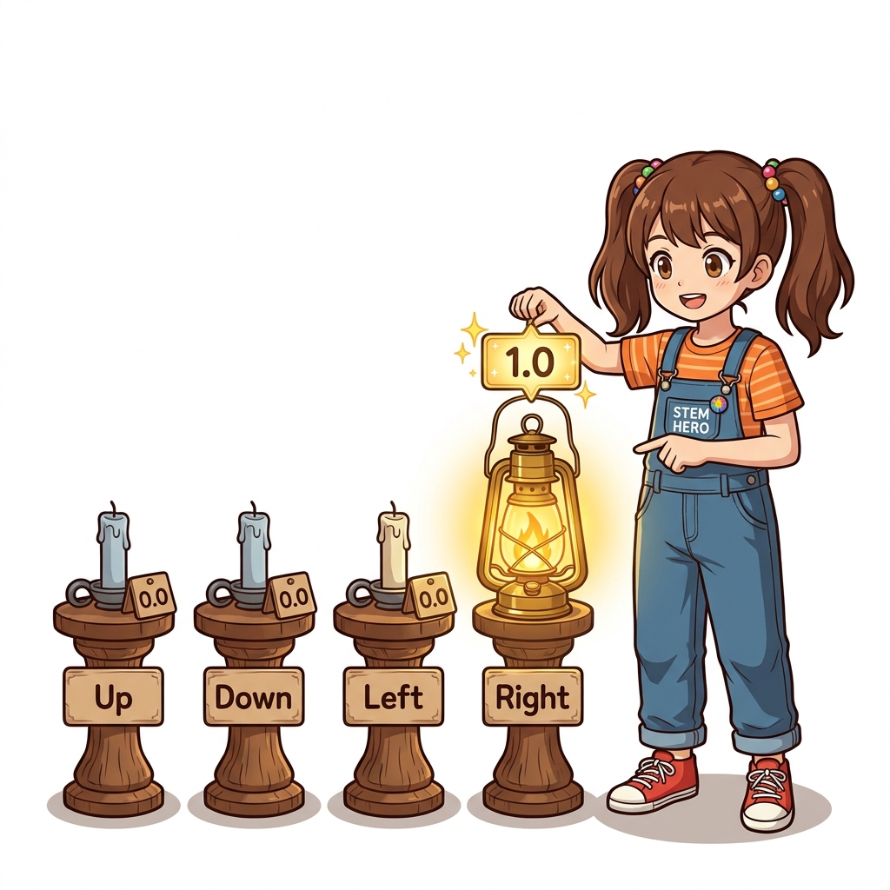
그림 10-3-35 오직 1등 행동에만 1.0의 불이 밝혀지고, 나머지 3개 행동에는 가차 없이 0.0의 불이 꺼져 있는 대상 정책 $\pi$의 극단적 원-핫(One-hot) 특성- 행동 정책 $b$의 호기심(탐색 시도): 반면 행동 정책 $b$는 탐험을 장려하기 위해 10%의 확률로 비탐욕적 행동(상, 하, 좌, 우 중 최선이 아닌 행동)을 시도합니다.
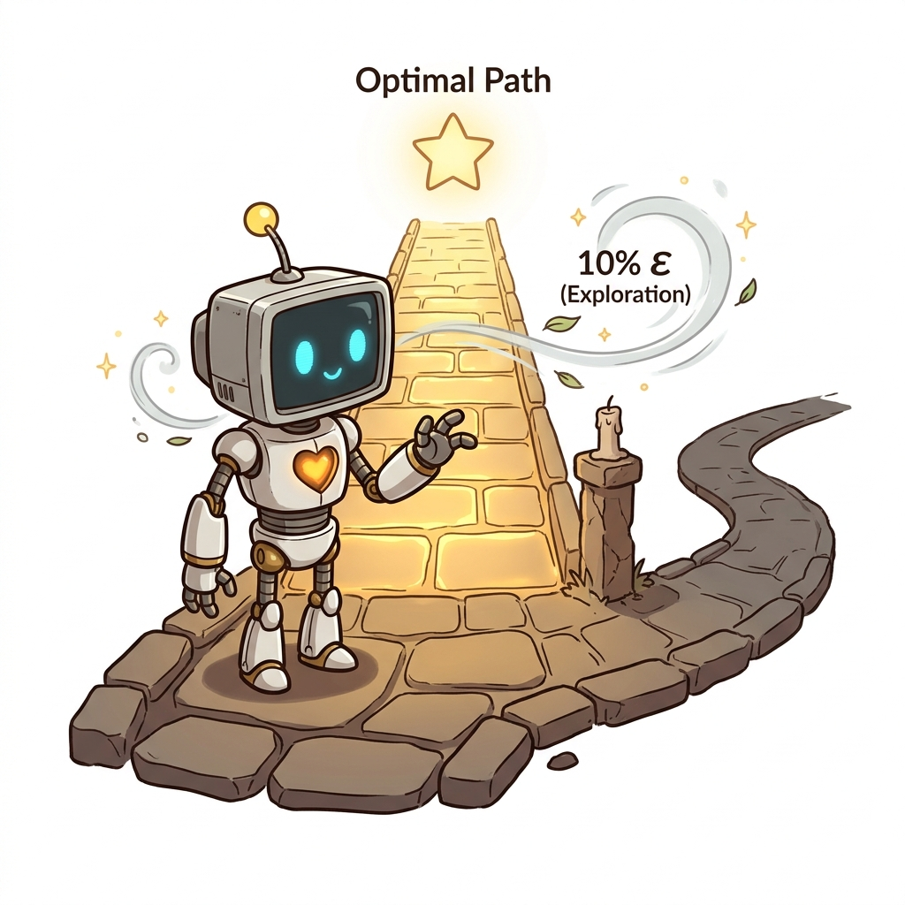
그림 10-3-36 10%의 호기심에 이끌려 촛불이 꺼진 미지의 옆길로 발을 뻗는 틴맨 로봇- 분자가 0이 되는 순간:
이때 $b$가 탐험을 위해 비탐욕적 행동을 선택하는 순간, 대상 정책의 확률은 분자에서 0이 되어버립니다:
$\pi(A_{t+1} \mid S_{t+1}) = 0 \implies \rho = \frac{0}{b} = 0$
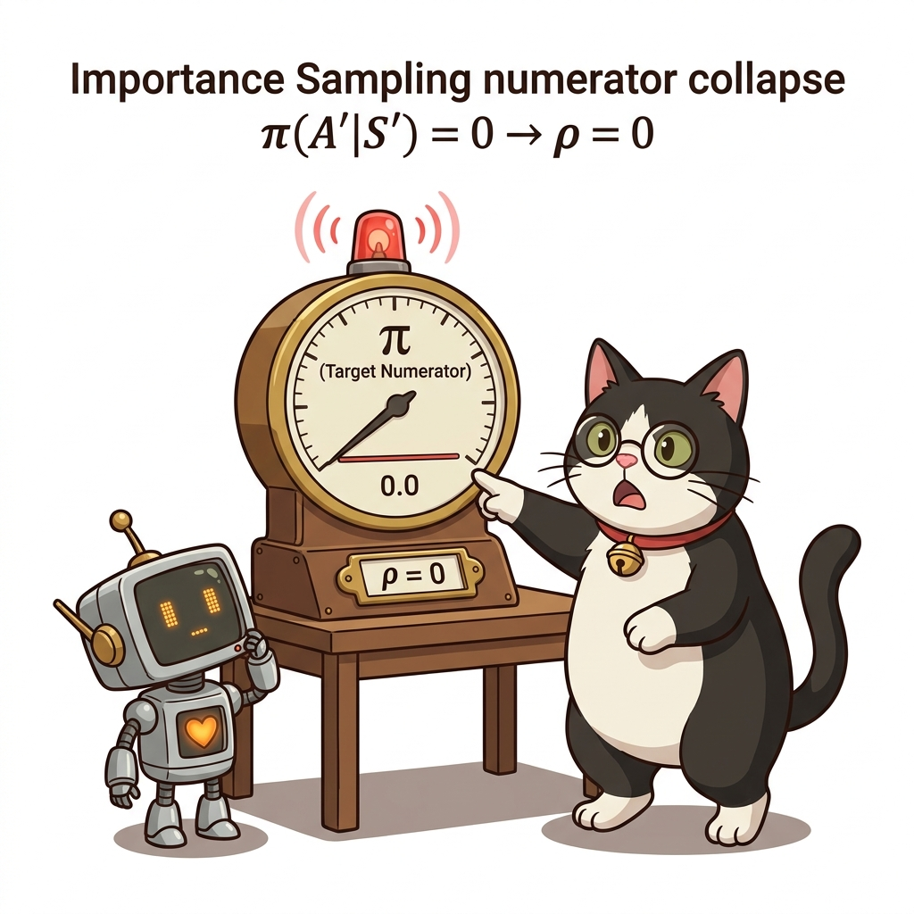
그림 10-3-37 탐험 행동이 선택되는 순간 대상 정책의 분자 계측기가 즉시 0.0으로 뚝 떨어지며 붉은 경고등이 깜빡이는 모습- TD 목표의 총체적 붕괴:
가중치 $\rho$가 0이 되면 어떤 일이 일어날까요? [식 10.15]의 TD 목표를 다시 봅시다:
TD 목표 = $\rho \cdot [R_t + \gamma Q_{\pi}(S_{t+1}, A_{t+1})] = 0 \cdot [\cdots] = 0$
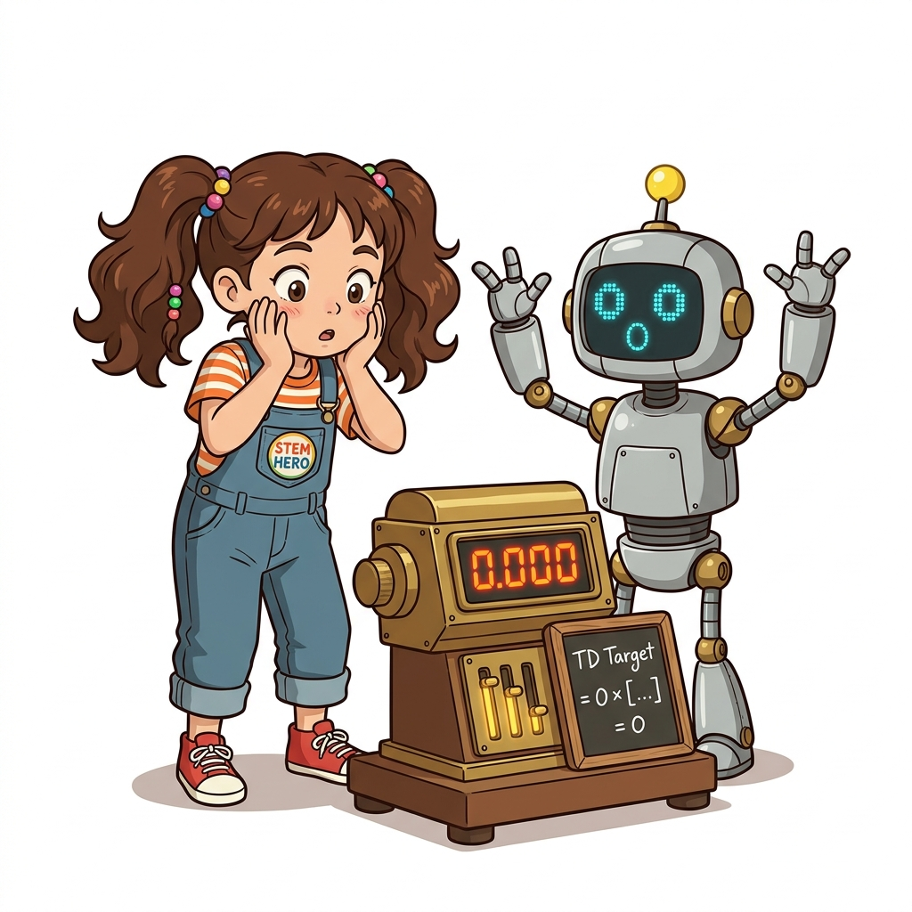
그림 10-3-38 $\rho = 0$이 곱해지는 순간 계산대 위의 모든 목표 점수가 0.000으로 흔적도 없이 소멸해 버리는 비극- 진짜 즉각 보상의 허무한 증발: 에이전트가 방금 온갖 고생 끝에 얻은 진짜 즉각 보상 $R_t$마저 0으로 곱해져 허무하게 지워져 버립니다! 그 결과 $Q$ 값은 엉뚱하게 0을 향해 곤두박질치는 치명적인 정보 유실이 발생합니다.
그림 10-3-39 피땀 흘려 획득한 황금 보상 별 $R_t$가 $0$의 마법에 걸려 한 줌의 연기처럼 허공으로 흩어져 버리는 슬픈 순간
그림 10-3-40 ρ = 0의 비극: 틴맨이 탐색 행동을 취하자마자 π 확률이 0이 되어, 기껏 획득한 황금 보상 Rt마저 0의 블랙홀 속으로 연기처럼 증발해 버리는 안타까운 순간
2. 극단적인 가중치 진폭 (0 아니면 1 초과)
- 행동 정책 $b$가 탐욕 행동을 고르면 $\rho$는 1보다 큰 값이 되고, 탐색 행동을 고르면 $\rho$는 0으로 뚝 떨어집니다.
- 매 걸음마다 TD 목표치가 0과 큰 양수를 널뛰기하듯 요동치기 때문에, 학습 곡선의 분산이 커져 수렴이 대단히 더뎌집니다.
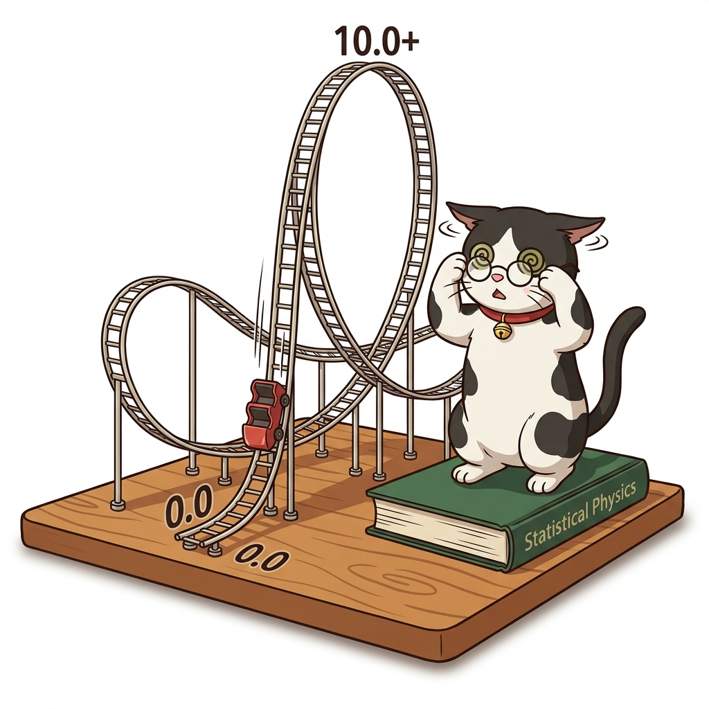
그림 10-3-41 0과 커다란 양수를 정신없이 오르내리는 가중치 롤러코스터 때문에 멀미를 느끼는 지니 조교와 요동치는 가치 그래프“중요도 비율 $\rho$를 곱하지 않고도 완벽한 오프-정책을 달성할 수는 없을까?”
이 질문은 강화학습 역사에서 가장 위대한 돌파구의 출발점이 되었습니다!
“행동 정책 $b$가 아무리 제멋대로 탐험을 하더라도, 다음 가치를 계산할 때 ‘실제로 취한 행동’을 보지 말고, 다음 상태에서 취할 수 있는 ‘이론상 최고의 행동 $\max_a Q(S_{t+1}, a)$’를 직접 꺼내 쓰면 어떨까?”
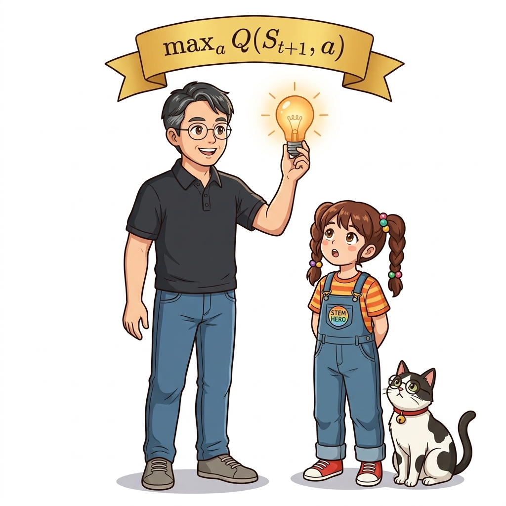
그림 10-3-42 “실제 행동 대신 다음 상태의 이론상 최고 가치 $\max_a Q$를 직접 꺼내자!” 번뜩이는 황금 영감 전구를 들어 올리시는 이호진 교수님과 환호하는 도로시이 놀라운 발상의 전환이 바로 다음 10.4절에서 다룰 전설적인 알고리즘, Q-러닝(Q-Learning)의 핵심 비밀입니다!
Q-러닝은 중요도 가중치 $\rho$의 나눗셈을 공식에서 완전히 지워버림으로써 오프-정책 학습의 모든 골칫거리를 단번에 해결합니다.
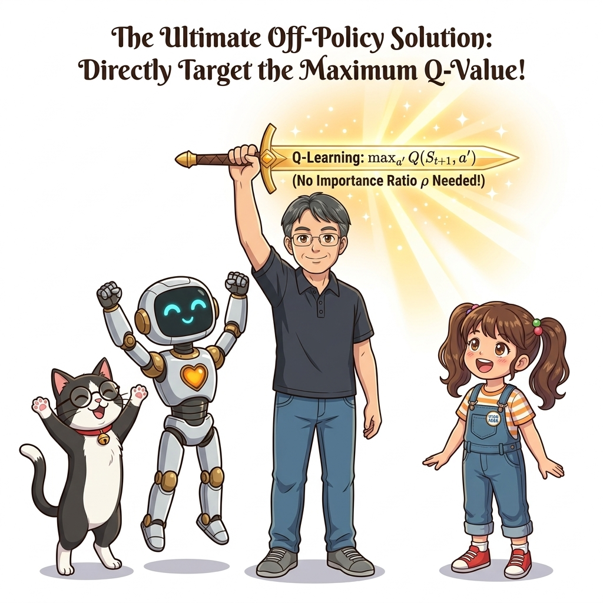
그림 10-3-43 중요도 비율 ρ 없이도 완벽한 오프-정책 제어를 실현하는 전설의 공식max_a Q의 황금 검을 꺼내 들며 다음 단원의 위대한 도약을 예고하시는 이호진 교수님
10.3.4 핵심 정리: 오프-정책 SARSA 3대 핵심 기둥
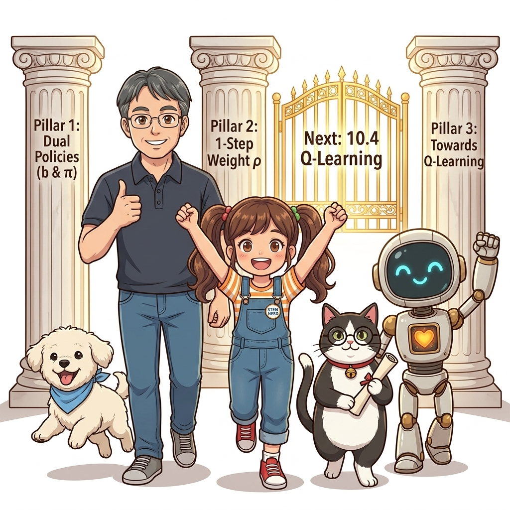
그림 10-3-44 오프-정책 SARSA 3대 핵심 기둥 기념비와 다음 10.4 Q-러닝으로의 힘찬 출항 피날레| 오프-정책 SARSA 핵심 기둥 | 핵심 내용 요약 | 비유 및 물리적 의미 |
|---|---|---|
| 1. 듀얼 정책 분리 운용 | 필드 탐험용 $b$($\varepsilon=0.1$)와 이상적 최적화용 $\pi$($\varepsilon=0$)의 완벽한 역할 분담 | 거친 탐험가 틴맨과 지혜로운 학자 도로시 |
| 2. 1-스텝 중요도 가중치 $\rho$ | $\rho = \pi(A_{t+1})/ b(A_{t+1})$로 확률 분포 차이를 단 1-스텝 만에 보정 | 두 세계를 잇는 정밀 황금 징검다리 |
| 3. $\rho = 0$ 한계와 Q-러닝의 예고 | 탐색 행동 시 $\pi=0$이 되어 즉각 보상까지 지워지는 한계를 극복하기 위해 Q-러닝으로 진화 | $\rho$ 없는 완벽한 알고리즘을 향한 위대한 도약 |
👨🏫 이호진 교수님의 직강 노트:
“오프-정책 SARSA는 비록 $\rho = 0$이라는 한계 때문에 실무에서 널리 쓰이지는 않지만, 강화학습 역사에서 ‘행동 정책과 대상 정책을 완벽히 분리한다’는 위대한 패러다임을 확립한 기념비적인 디딤돌입니다. 이 디딤돌이 있었기에 인류는 중요도 가중치의 족쇄를 끊어낸 절대강자 Q-러닝을 만날 수 있었습니다!”
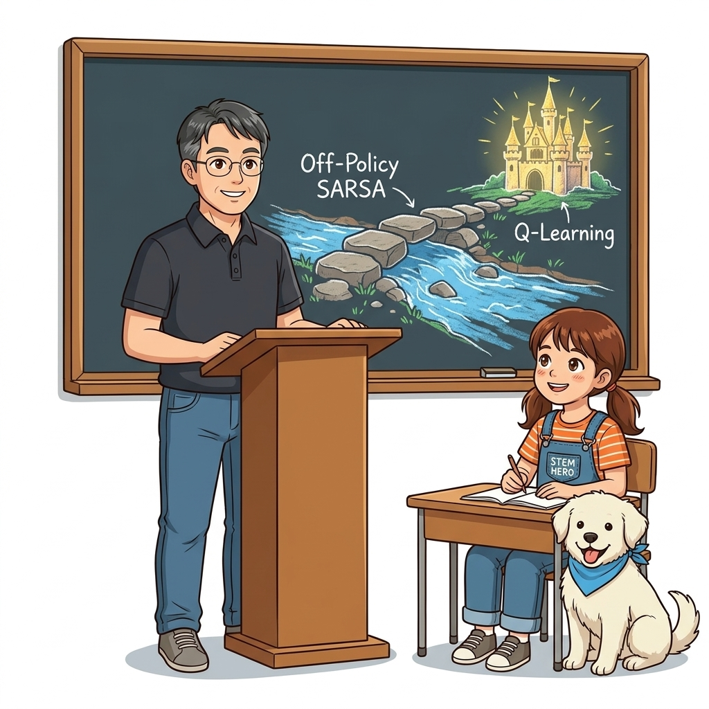
그림 10-3-45 칠판 앞에서 오프-정책 SARSA가 Q-러닝으로 이어지는 튼튼한 디딤돌임을 열정적으로 역설하시는 이호진 교수님과 경청하는 도로시 탐험대🐱 조교 지니의 응원 노트:
“도로시와 여러분, 두 개의 나침반을 들고 떠난 오프-정책의 모험이 흥미진진하셨나요? $\rho$의 나눗셈 때문에 소중한 보상이 지워지는 아픔을 겪었지만, 이제 우리는 해답을 알고 있어요! 다음 10.4절에서는 마침내 강화학습의 영원한 베스트셀러이자 현대 딥러닝(DQN)의 뿌리가 된 Q-러닝의 눈부신 세계로 다 함께 뛰어들어 봅시다냥!”
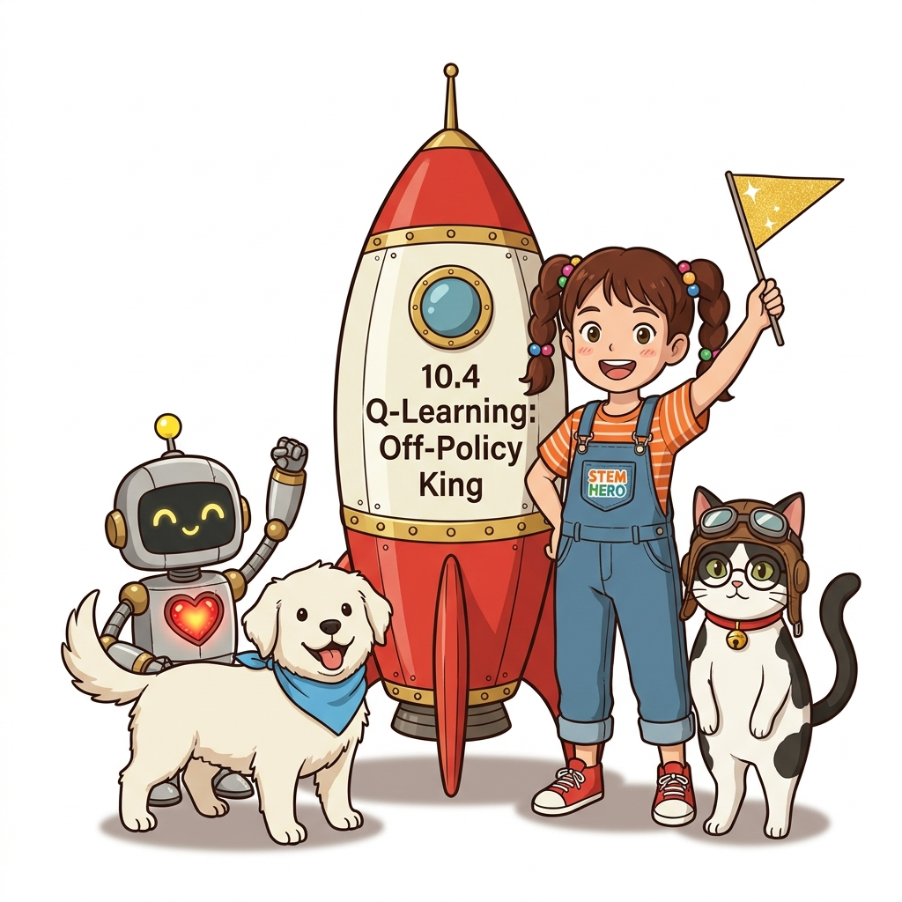
그림 10-3-46 ‘10.4 Q-러닝: 오프-정책의 제왕’ 로켓 발사대 앞에서 황금 깃발을 흔들며 다음 단원으로의 출격을 선포하는 조교 지니와 도로시 탐험대